Galeria da Vida Selvagem
Explore a diversidade dos animais do nosso ecossistema.
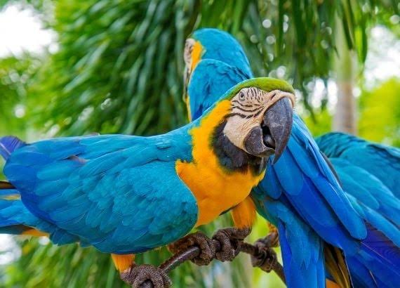
Arara-canindé
Aves muito coloridas e sociáveis da fauna brasileira.
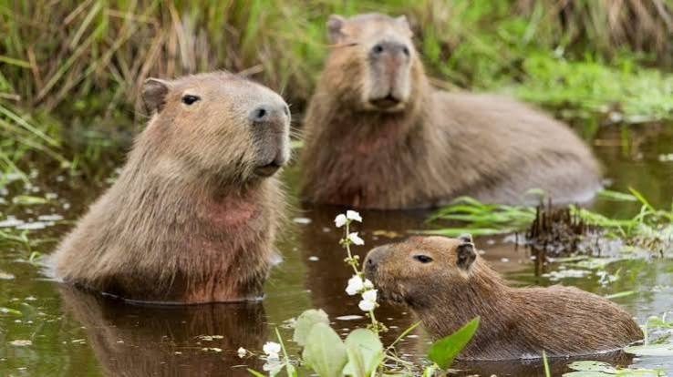
Capivaras
O maior roedor do mundo, vive próximo a corpos d'água.
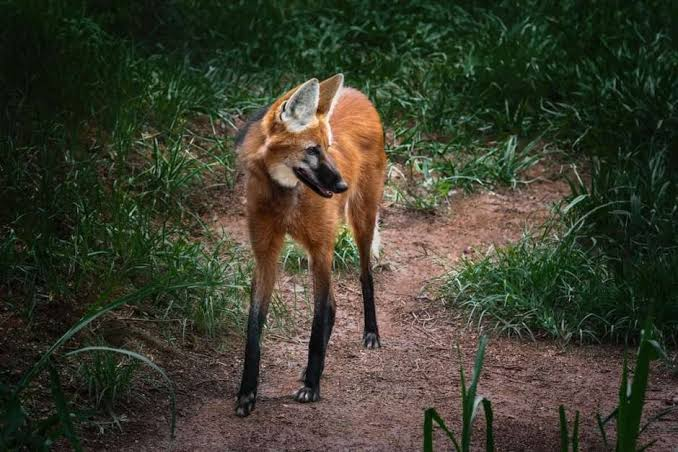
Lobo-guará
Maior canídeo da América do Sul, típico do Cerrado.
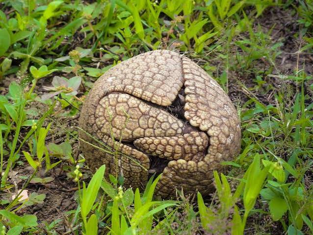
Tatu-bola
Espécie endêmica do Brasil que se enrola em formato de bola.
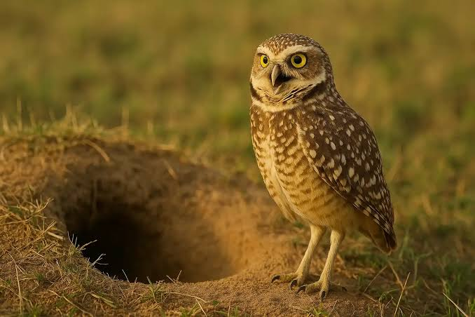
Coruja-bochechuda
Conhecida por habitar buracos no solo em campos e pastos.
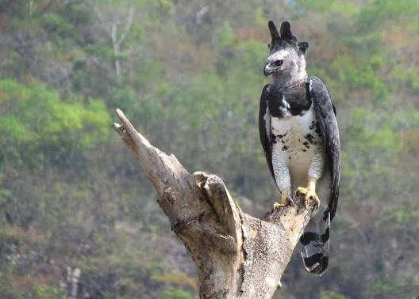
Harpia
Uma das maiores e mais poderosas aves de rapina do mundo.
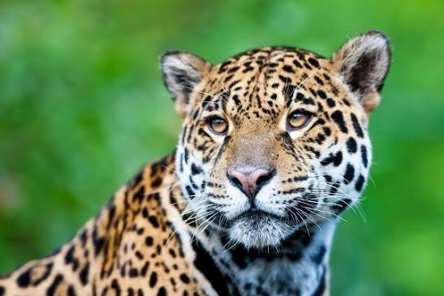
Onça-pintada
O maior felino das Américas e topo da cadeia alimentar.
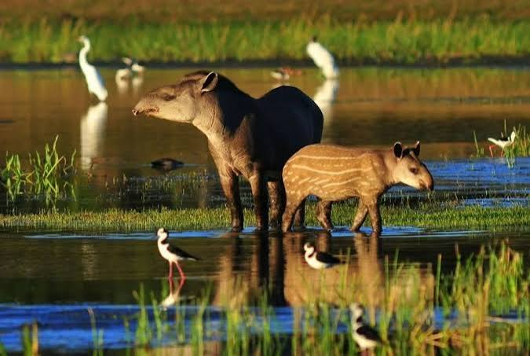
Anta
O maior mamífero terrestre da América do Sul.
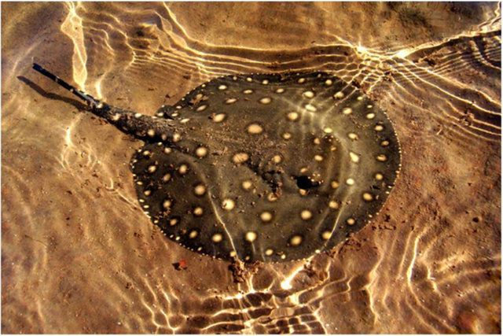
Arraia de Água Doce
Habitante dos rios amazônicos com ferrão defensivo na cauda.

Jacaré-açu
O maior réptil da Amazônia, podendo passar de 4 metros.
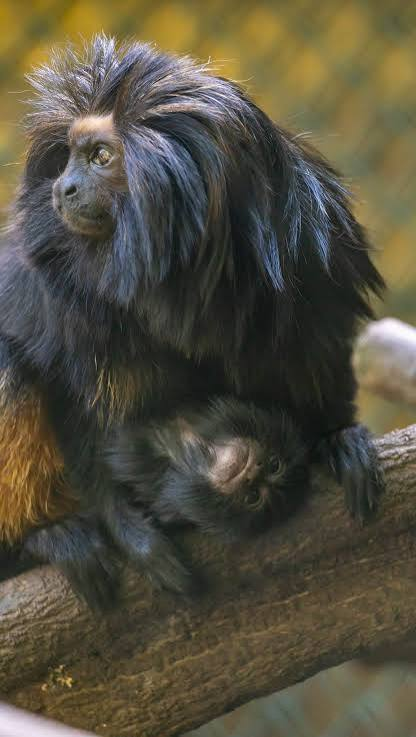
Mico-leão-preto
Espécie de primata endêmica do estado de São Paulo e ameaçada de extinção.
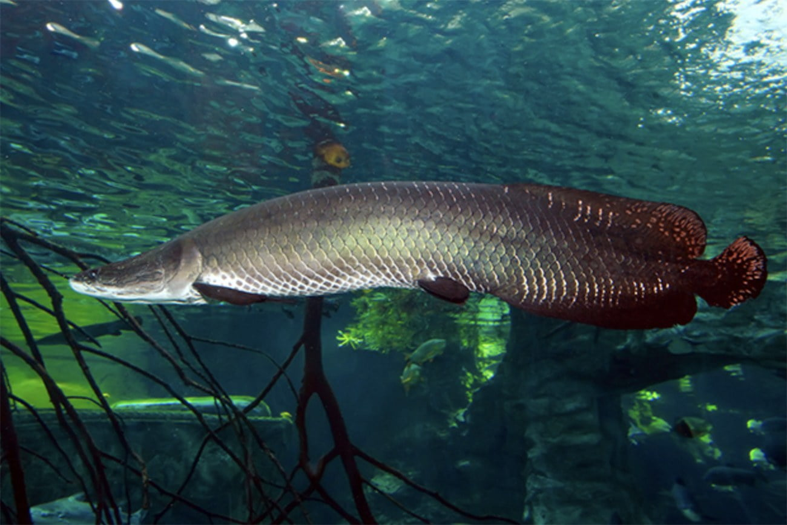
Pirarucu
Um dos maiores peixes de água doce do planeta, nativo da Amazônia.
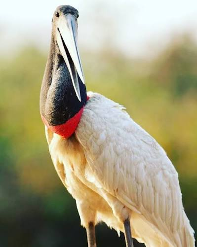
Tuiuiú
Ave símbolo do Pantanal, famosa por seu grande porte e pescoço vermelho.
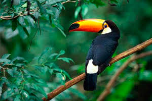
Tucano
Famoso por seu enorme bico colorido e leveza em voo.
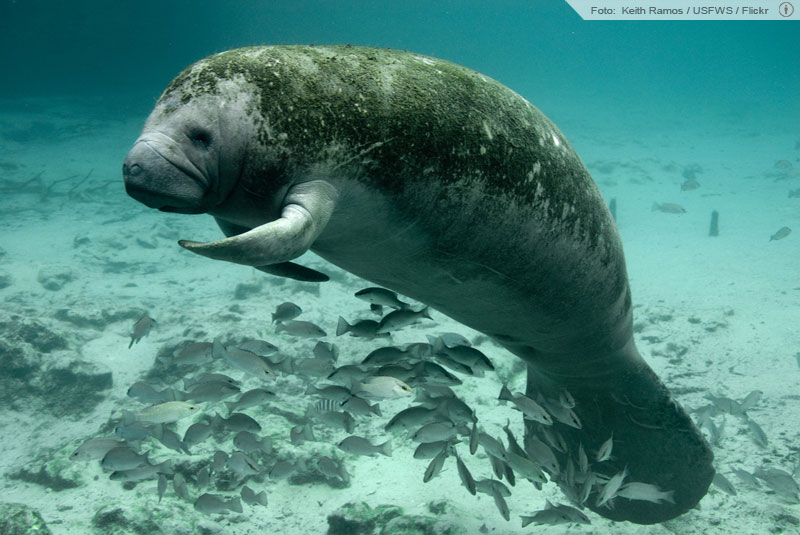
Peixe-boi
Doces mamíferos aquáticos que vivem em rios e litorais brasileiros.
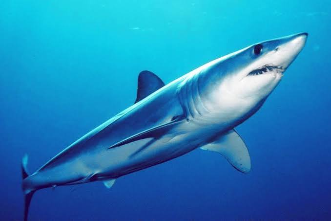
Tubarão-azul
Predador marinho característico por seu tom azul vibrante.